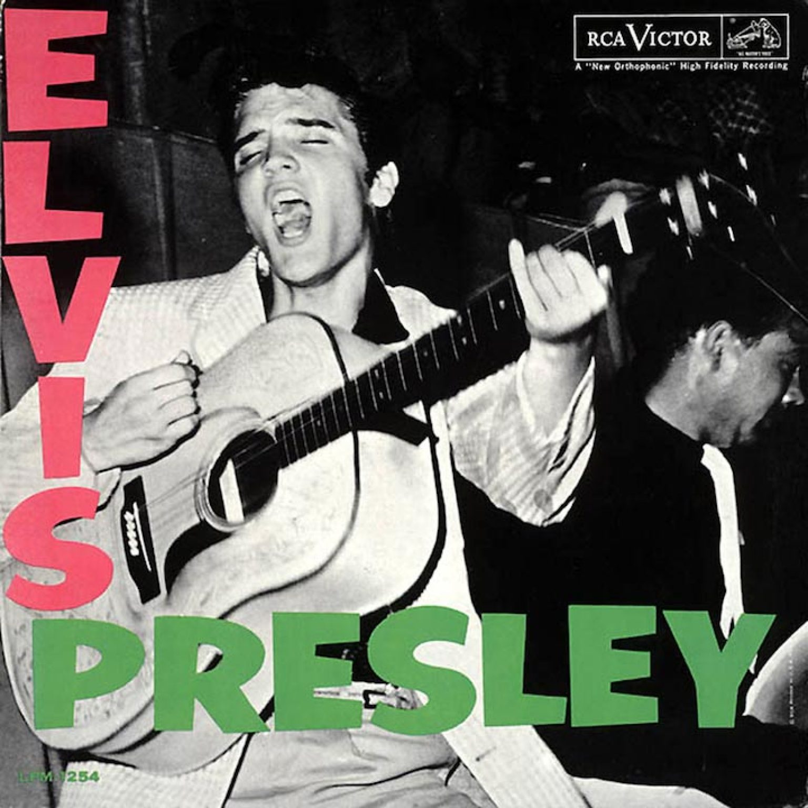
elvispresley.jpg |
Album cover of a black-and-white photograph showing Elvis Presley playing an acoustic guitar with his mouth open in song; features large red "ELVIS" text on the left, green "PRESLEY" at bottom, and RCA Victor logo top right labeled as a “New Orthophonic” high fidelity recording. |
album cover of Elvis Presley featuring a black-and-white photograph of him singing while holding an acoustic guitar; bold red vertical text on the left reads "ELVIS" and large green horizontal text at the bottom reads "PRESLEY", with the RCA Victor logo in the top right corner. |
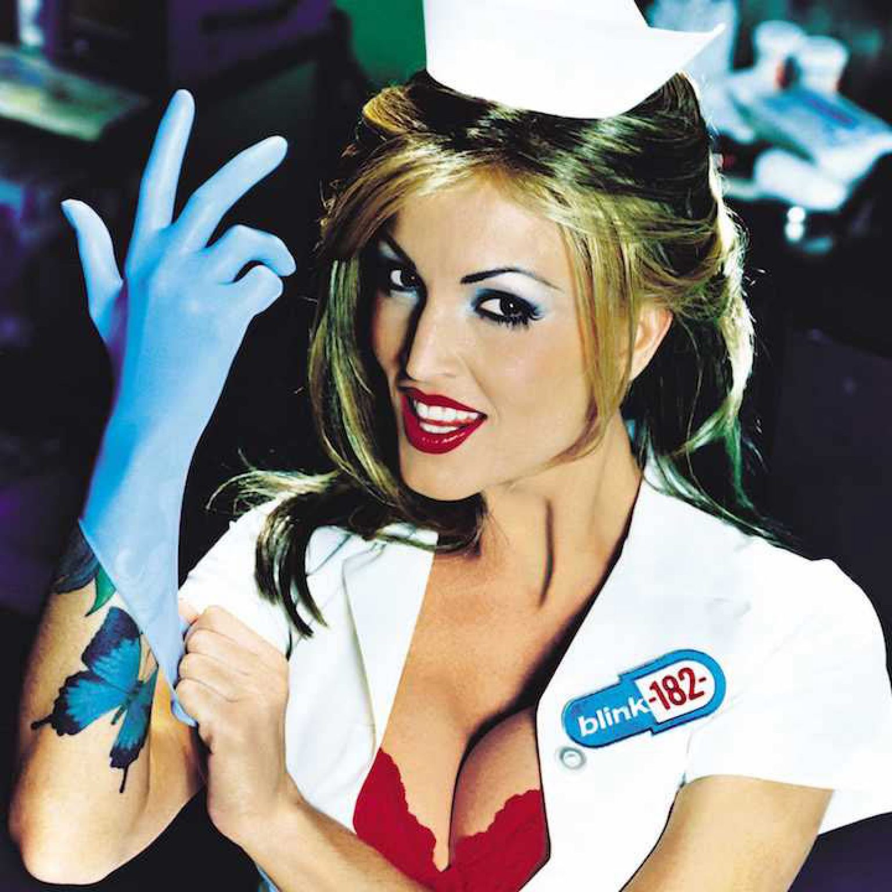
enema.jpg |
album cover of: Blink-182 features a person in nurse attire with a white cap, blue gloves, red undergarment visible under a white coat, a butterfly tattoo on their arm, and a "blink-182" badge. |
album cover of: A person wearing a white nurse cap and blue latex gloves, with a blue butterfly tattoo visible on their arm, holding up a gloved hand while wearing a white jacket over a red top that displays "blink-182" branding. The background shows blurred electronic equipment against a dark setting. |

fayewebster.jpeg |
album cover of: A person with shoulder - length brown hair and bangs stands among rows of blue clothes on hangers, holding a blue dress on a wooden hanger while wearing a white shirt and a necklace. |
album cover of: A person stands in front of a rack of vibrant blue garments, holding a bright blue dress on a wooden hanger while wearing a white top and having shoulder-length brown hair with bangs. |
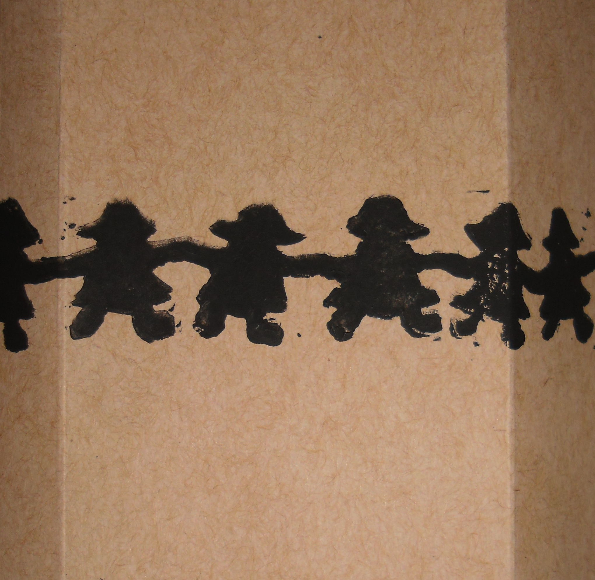
fourteenbears.jpg |
album cover of: Light brown textured background with six black silhouette figures of children holding hands in a line; the rightmost figure wears a pointed hat. |
album cover of a minimalist design featuring six black silhouetted figures wearing hats and holding hands in a line against a textured light brown background. |
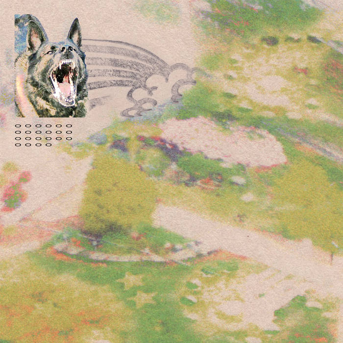
girlwithfish.jpg |
album cover of: A German Shepherd dog with its mouth open appears in the top left corner against an abstract, watercolor-style background featuring green, beige, and pink hues with star shapes and small circular dots on textured paper. |
album cover of: A digital collage featuring a photograph of a German Shepherd dog barking in the top-left corner, set against an abstract, textured landscape with muted green and beige brushstrokes; a grid of small black circles is positioned below the dog. |
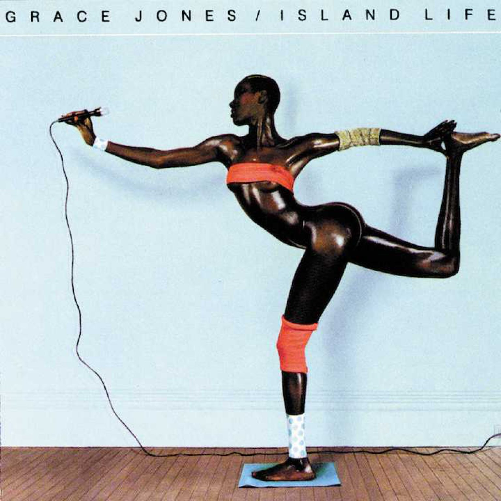
gracejones.jpg |
album cover of: Grace Jones / Island Life shows a figure in a dynamic dance pose holding a microphone, wearing red and orange bands, patterned socks, and standing on a blue mat against a light blue wall. |
album cover of: Grace Jones' Island Life features a bronze statue-like figure in a dynamic yoga pose against a light blue wall. The figure wears a red waistband, red knee sleeve, and light green arm bandage while holding a microphone with a cord, standing on one foot atop a blue mat on wooden flooring. |
greenday.jpg |
Album cover of: Green Day's "Doofie" album featuring bold yellow "GREEN DAY" text at the top, red "doofie" text below, and a vibrant cartoon illustration depicting a jet plane, explosion, clouds, and a bustling crowd of animated characters. |
album cover of Green Day’s "Dookie" featuring a vibrant cartoon illustration with bold yellow text for the band name at the top and red lowercase text for the album title at the bottom, showcasing a starburst explosion, airplanes (including one labeled "BAD YEAR"), barrels marked "DOOKIE," and a busy street scene with numerous characters and buildings. |
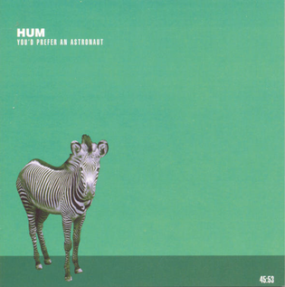
hum.png |
album cover of a solid green background displaying a zebra facing forward on the left, with "HUM" and "YOU'D PREFER AN ASTRONAUT" text in white at top left and "45:53" in white at bottom right. |
album cover of HUM's "You'd Prefer an Astronaut", featuring a black-and-white zebra standing against a solid green background with white text reading "HUM" and the album title at the top left corner, and "45:53" in the bottom right. |
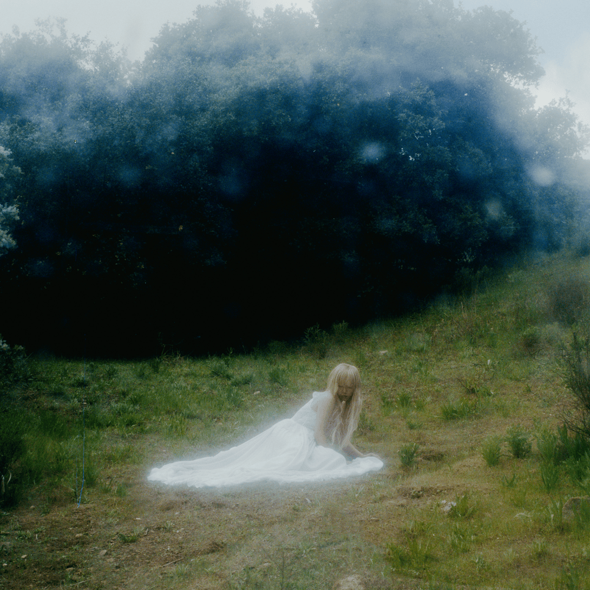
ifnotwinter.jpg |
album cover of: A woman with long blonde hair in a flowing white gown sits on a sun-dappled grassy hillside beneath dense, mist-shrouded trees. |
album cover of The Weeknd's "Blinding Lights" features a blonde woman in a flowing white gown kneeling on a grassy hill under a misty canopy of dark green trees. The scene has an atmospheric, ethereal quality with soft lighting and subtle fog throughout the landscape. |
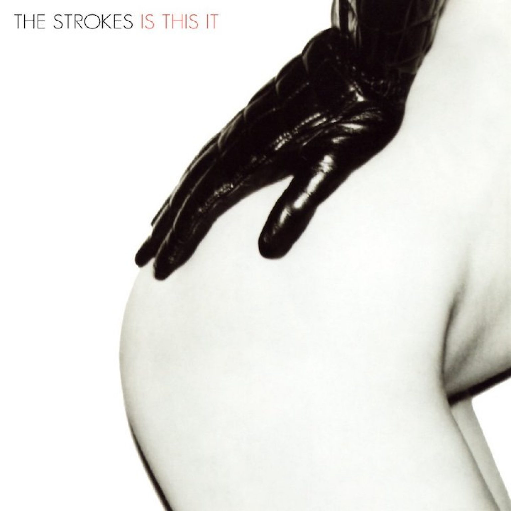
isthisit.jpg |
Album cover of The Strokes' "Is This It" displays bold text "THE STROKES" in black and "IS THIS IT" in red at the top left, alongside a close-up of a person's shoulder and arm with a shiny black glove resting on it against a white background. |
album cover of The Strokes' *Is This It* features a glossy black latex glove resting on a bare person’s shoulder against a white background. The text “THE STROKES IS THIS IT” appears in the top left corner, with “IS THIS IT” in red. |
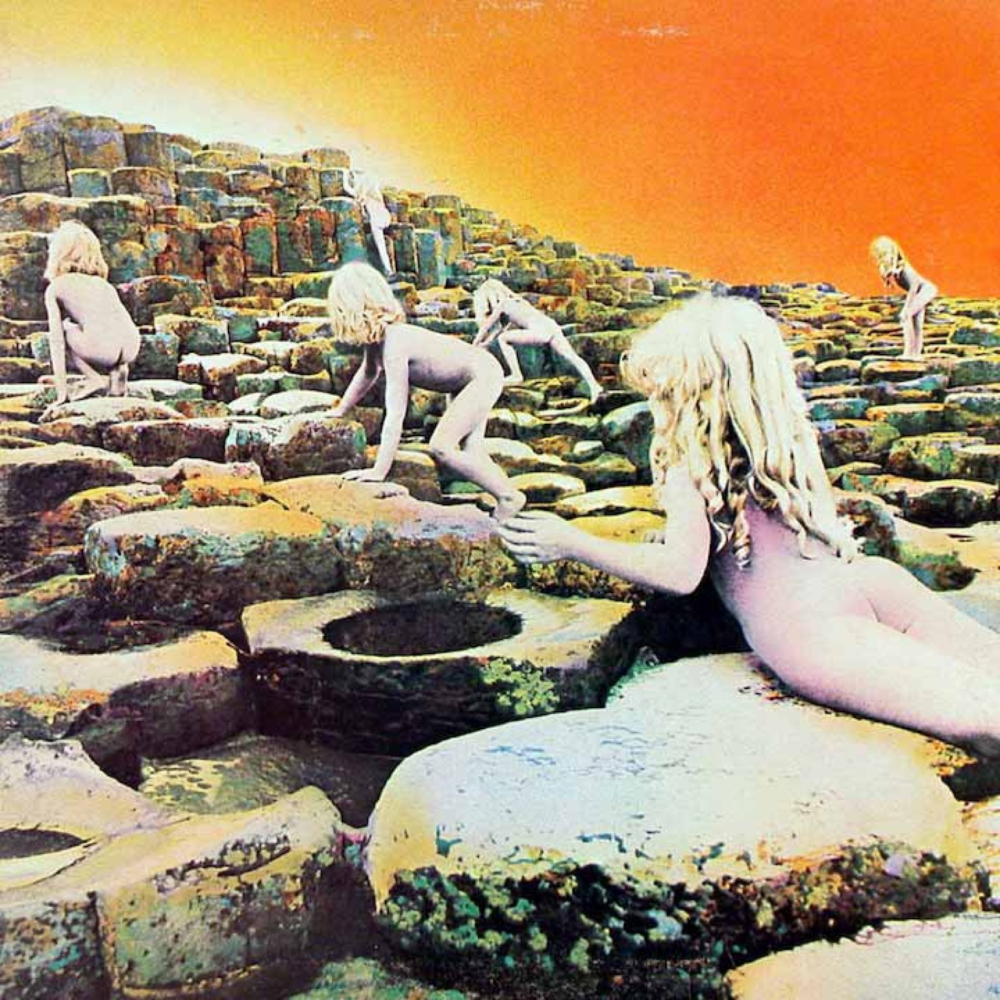
ledzeppelin.jpg |
album cover of: A vibrant illustration depicting multiple blonde-haired nude children interacting with a rugged, multicolored stone structure under an orange-toned sky. |
album cover of Pink Floyd’s *The Wall* shows several nude blonde figures interacting with a layered landscape of stacked stone blocks containing circular cutouts under an orange sky backdrop. |
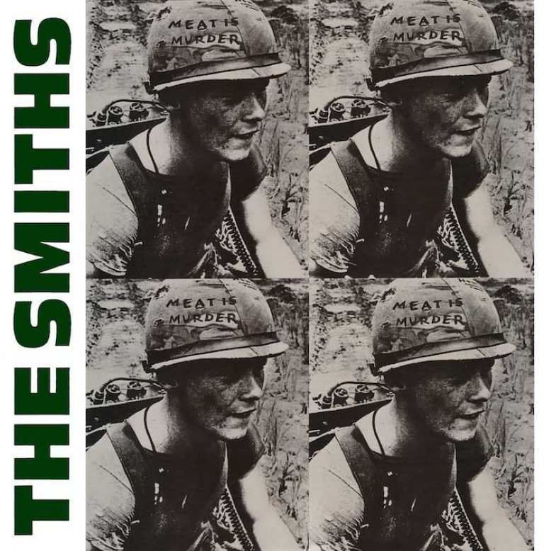
meatismurder.jpg |
album cover of The Smiths displays vertical green "THE SMITHS" text on the left alongside four black-and-white images of a person in military attire wearing a helmet inscribed with "MEAT IS MURDER," set against a rocky backdrop. |
album cover of The Smiths' "Meat Is Murder" featuring a four-panel grid of black-and-white photographs. Each panel depicts an individual wearing military-style gear including a helmet inscribed with "MEAT IS MURDER" and carrying a machine gun against a wooded background. |
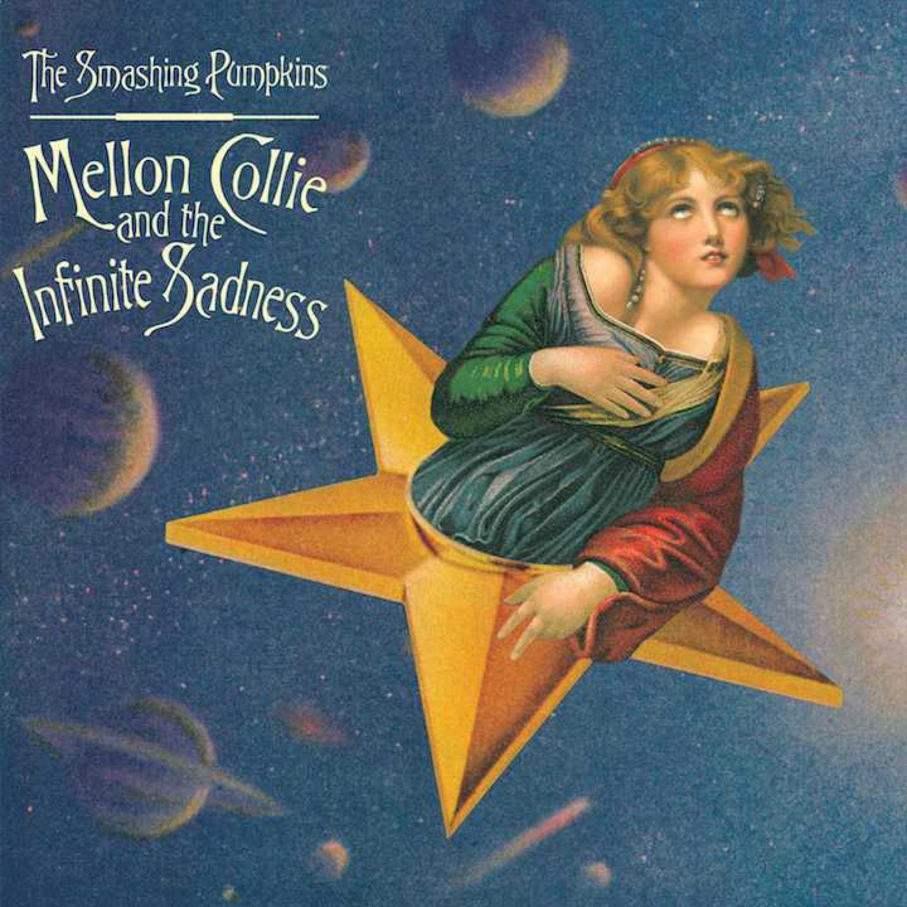
melloncollie.jpg |
album cover of: The Smashing Pumpkins' "Mellon Collie and the Infinite Sadness" features a woman in a green and red historical-style dress seated on a large golden star against a deep blue cosmic backdrop with floating planets, stars, and a nebula-like shape. |
album cover of The Smashing Pumpkins' *Mellon Collie and the Infinite Sadness* features a vintage-style illustration of a woman seated on a large yellow star against a dark blue cosmic backdrop with planets, stars, and subtle nebulae. |
nevermind.jpg |
album cover of: Nirvana’s *Nevermind* features an infant swimming underwater holding a U.S. dollar bill on a string, with “NIRVANA” and “NEVERMIND” displayed in bold text below. |
album cover of Nirvana’s Nevermind features a nude infant swimming underwater, reaching toward a one-dollar bill attached to a fishing line; the image has a bright blue aquatic background with bold text displaying "NIRVANA" and "NEVERMIND" at the bottom. |
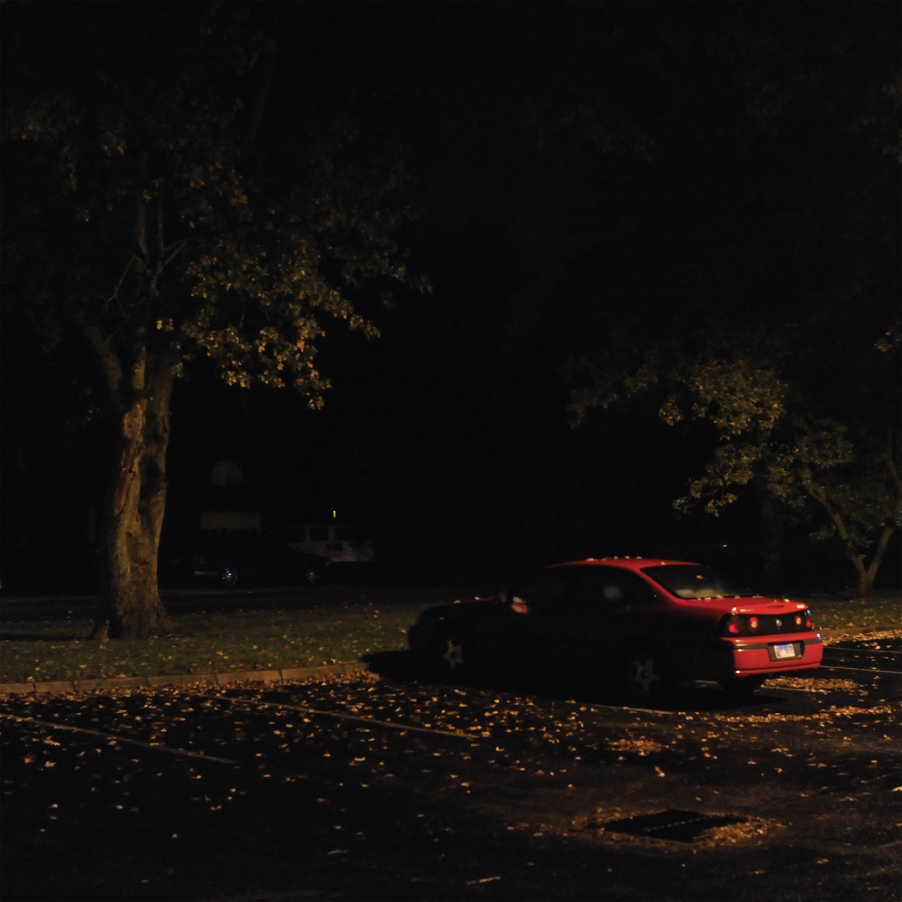
nofloor.jpg |
Album cover of: A nighttime scene showing a red car parked in a lot scattered with fallen leaves, flanked by trees and dimly lit grass under dark skies. |
album cover of a nighttime parking lot scene featuring a red sedan parked near trees with scattered fallen leaves, illuminated by dim ambient light; dark surroundings emphasize the car and foliage, creating a moody atmosphere. |
nwa.jpg |
album cover of: N.W.A.'s "Straight Outta Compton" album showing six members looking down at the viewer under a blue sky, with red "N.W.A." text top, white song title bottom, and black "PARENTAL ADVISORY EXPLICIT CONTENT" label in lower left. |
album cover of: N.W.A.'s "Straight Outta Compton" shows bold red text for the band name at the top, a Parental Advisory label in the bottom-left corner, and a photo of five individuals looking downward with one person holding a camera. |
odelay.jpg |
Album cover of: Beck! Odelay shows a shaggy Komondor dog mid-jump over an equestrian obstacle with black-and-white striped rails, set against a grassy field and trees under a light sky, with the album title "BECK! ODELAY" in bold red text overlaying the scene. |
album cover of Beck's *Odelay* featuring bold red text "BECK! ODELAY" positioned over a white jump obstacle structure with a black-and-white striped crossbar and a large bundle of dried vegetation atop it, set against an open grassy field with distant trees. |
parannoul.jpg |
album cover of: A person stands on a paved pathway in a snowy landscape, surrounded by leafless trees with faint blue and purple tones against an overexposed background. |
album cover of: A snowy park scene with bare trees, a snow-covered pathway, and a person standing near the center, rendered in an overexposed, high-contrast style with vibrant yet faded colors. |
purplerain.jpg |
Album cover of Purple Rain by Prince and the Revolution displays Prince in purple attire on a smoking motorcycle, bordered by colorful flowers, with a dimly lit building behind him and bold "Purple Rain" text at the top. |
album cover of "Purple Rain" by Prince and The Revolution shows Prince in a purple jacket riding a motorcycle with smoke and flames around him; a woman stands on a balcony in the background, framed by a vibrant floral border surrounding the central image. |
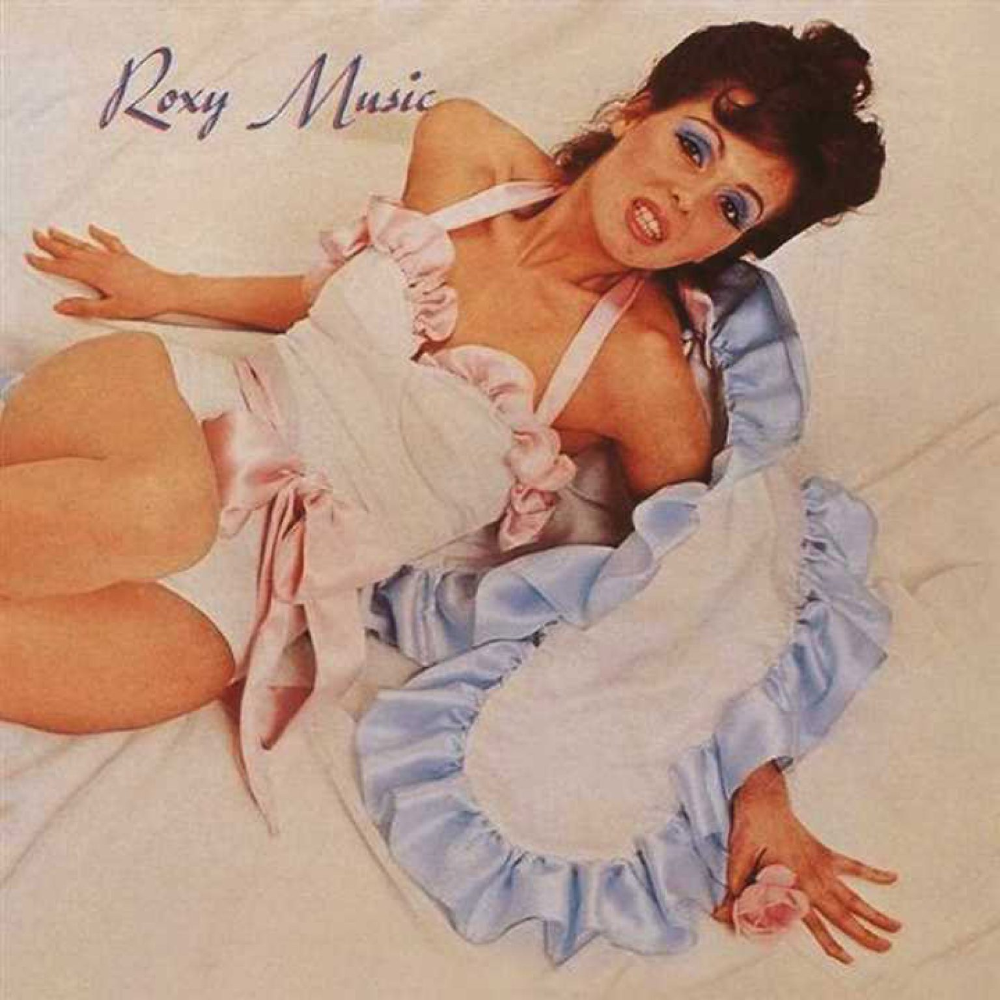
roxymusic.jpg |
album cover of: A woman reclines on a light surface wearing a vintage-style dress with pink ruffles, white corset-like detailing, and blue ruffled sleeves while holding a rose; "Roxy Music" appears in cursive script at the top left. |
album cover of Roxy Music featuring a woman reclining on a bed in ruffled pastel lingerie with light pink and blue accents; the band name "Roxy Music" is displayed in cursive text at the top left corner. |
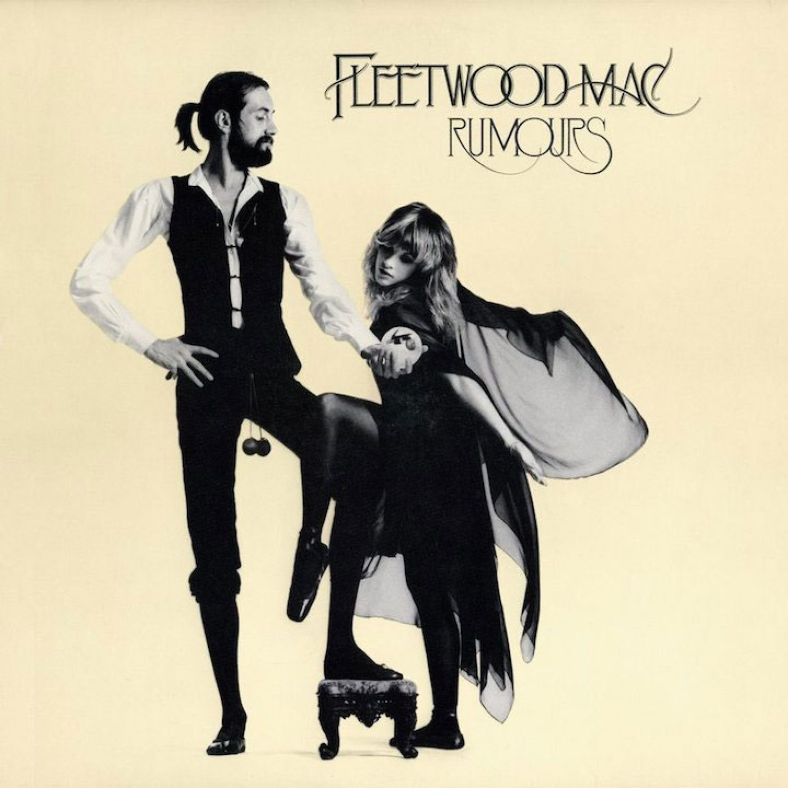
rumours.jpg |
album cover of: Fleetwood Mac's "Rumours" album features a sepia-toned image of two figures; a man in a vest stands with hands on hips while lifting a woman in a flowing dress above a small ornate stool, with the band name and album title in stylized text at the top. |
album cover of Fleetwood Mac's "Rumours" features a black-and-white photograph on a beige background depicting two individuals in vintage attire interacting closely, with the band name and album title displayed prominently at the top right. |
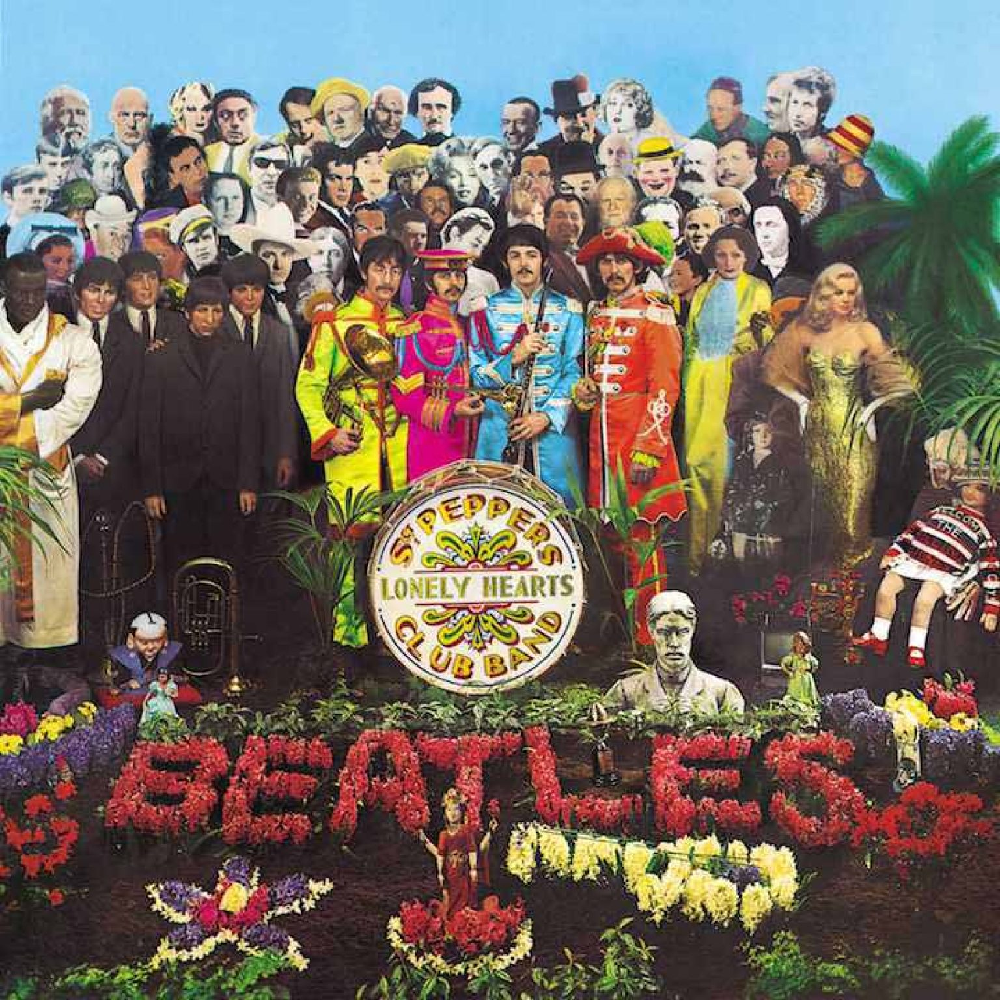
sgtpepper.jpg |
album cover of: The Beatles' "Sgt. Pepper's Lonely Hearts Club Band" displays a vibrant collage of historical and cultural figures behind four individuals in colorful military-style uniforms holding instruments, with a large central drum bearing the band name and floral arrangements spelling "BEATLES" at the bottom against a blue background. |
album cover of The Beatles’ *Sgt Pepper's Lonely Hearts Club Band* features a vibrant collage-style illustration showcasing numerous historical and cultural figures gathered around four band members dressed in brightly colored uniforms, with flowers spelling “BEATLES” prominently displayed at the bottom. |
snake.jpg |
album cover of: West Virginia Snake Handler Revival's "They Shall Take Up Serpents" features a person in a white shirt, black suspenders, and patterned tie holding a snake, set against dark wooden panels and red curtains. |
album cover of "West Virginia Snake Handler Revival" features a man wearing a white dress shirt, black suspenders, and patterned tie while holding a snake against an interior backdrop with wooden walls and red drapery. The title appears prominently at the top in bold red lettering, accompanied by the subtitle “They Shall Take Up Serpents” below it and a small logo in the upper right corner. |
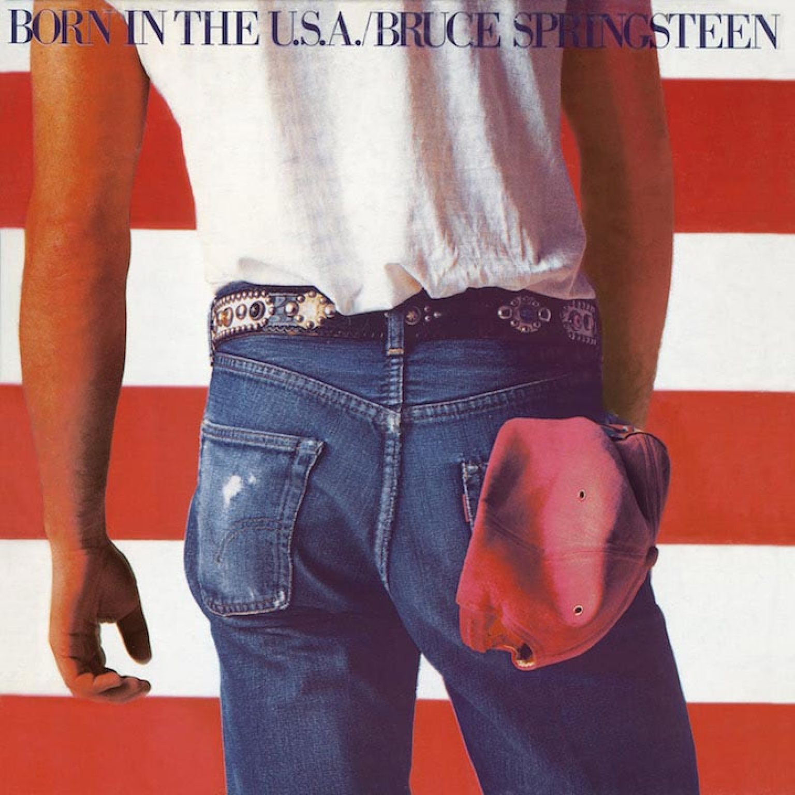
springsteen.jpg |
album cover of: Bruce Springsteen's "Born in the U.S.A." album shows the artist from behind wearing a white t-shirt, blue denim jeans with a red cap in the back pocket, a decorated belt buckle, and standing before a background of red and white horizontal stripes. |
album cover of 'Born in the U.S.A.' by Bruce Springsteen features a person’s lower torso against a red and white striped background; the individual wears blue jeans with a visible back pocket holding a red baseball cap, a white shirt, and a decorative belt. |
tashidorji.jpg |
album cover of: A red-bordered design features nine square photographs in a 3x3 grid with top text reading "we will be wherever the fires are lit" and bottom text "tashi dorji", showcasing diverse scenes like forests, stormy skies, discarded items, and waterways. |
album cover of: A grid of nine photographs set against a red-to-black gradient background, showcasing scenes including a forest, smoke, a glove on gravel, a pier over water, urban architecture, and littered ground, with the title "we will be wherever the fires are lit" in white text at the top and artist name "tashi Dorji" in red text at the bottom. |
teenagedream.jpg |
album cover of: A woman lies atop soft pink clouds against a bright blue sky, with a "Parental Advisory Explicit Content" label visible in the bottom right corner. |
album cover of a musical release depicting a nude person reclining on soft pink clouds against a blue sky; a "Parental Advisory Explicit Content" label appears in the bottom right corner. |
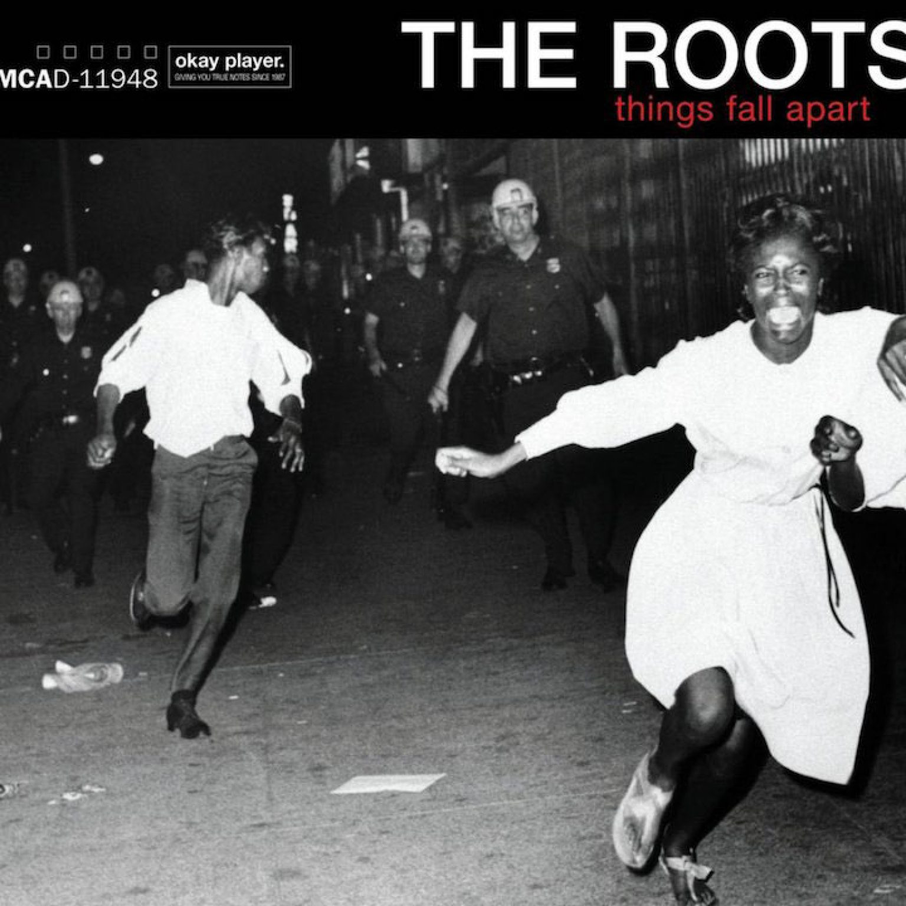
thingsfallapart.jpg |
Album cover of: The Roots' album "things fall apart" features a black-and-white nighttime scene with two individuals running from police officers on a street, accompanied by text elements including "THE ROOTS," "things fall apart," and "okay player." |
album cover of The Roots' "Things Fall Apart" featuring a black-and-white nighttime street scene where two individuals run toward the camera, with police officers and other figures visible in the background; text includes "THE ROOTS", "things fall apart", "okay player." logo, and catalog number MCAD-11948. |
velvetunderground.jpg |
Album cover of a stylized yellow banana with bold black accents on a white background; "Andy Warhol" is written in elegant cursive at the bottom. |
album cover of Andy Warhol's artwork featuring a stylized yellow banana with bold black paint splatters against a plain white background; text "PEEL SLOWLY AND SEE" appears in the upper right corner and "Andy Warhol" is displayed at the bottom center. |
winehouse.jpg |
album cover of: Amy Winehouse seated on a stool against a dark chalkboard background, wearing a patterned dress, red belt, necklaces, tattoos, and leopard-print shoes, with “Amy Winehouse” and “Back to Black” text in bold white lettering. |
album cover of Amy Winehouse’s "Back to Black" features her seated on a wooden stool against a dark chalkboard background with faint writing; she wears a white dress with red accents and leopard-print heels. |
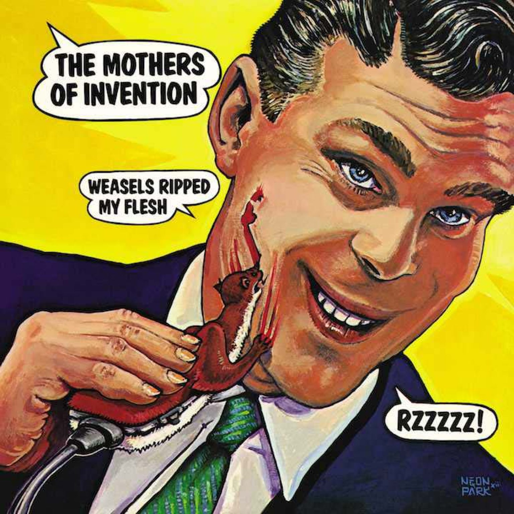
zappa.jpg |
album cover of a pop art illustration: a man in a dark suit with a green tie holds a brown weasel that bites his cheek, while speech bubbles display “THE MOTHERS OF INVENTION”, “WEASELS RIPPED MY FLESH”, and “RZZZZZ!” against a bright yellow background. |
album cover of The Mothers of Invention’s "Weasels Ripped My Flesh" shows a retro comic-style illustration on a bright yellow background with a person in a dark suit holding a weasel attached to a microphone. Speech bubbles display the text "THE MOTHERS OF INVENTION", "WEASELS RIPPED MY FLESH", and "RZZZZZ!". |